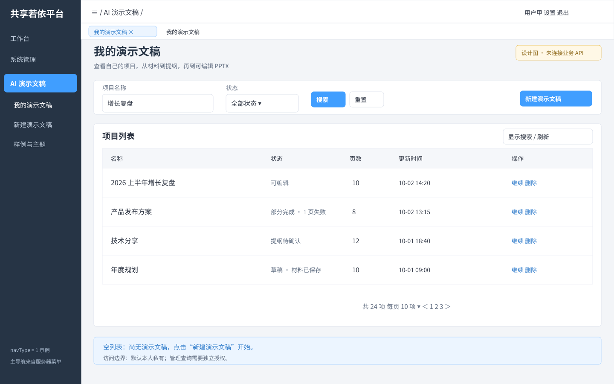
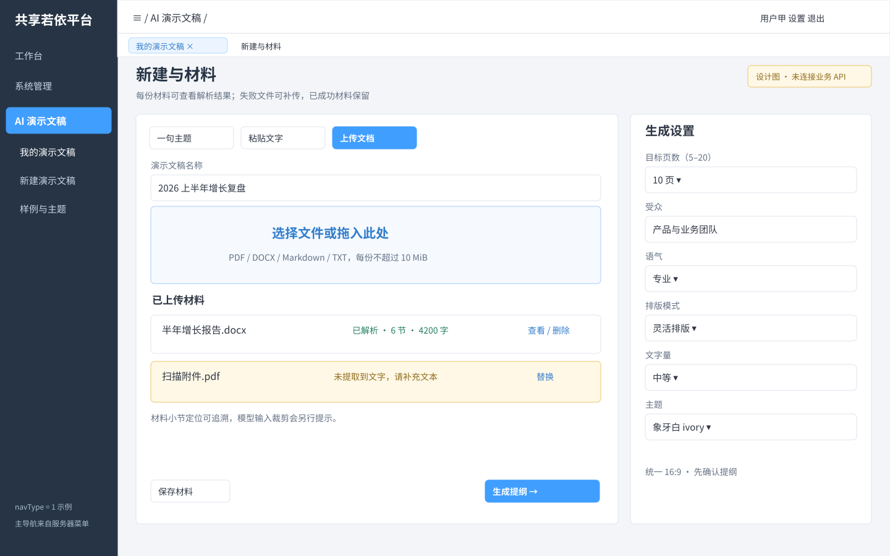
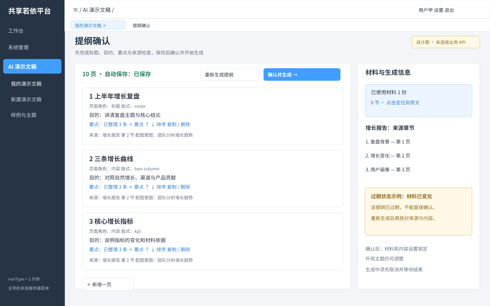
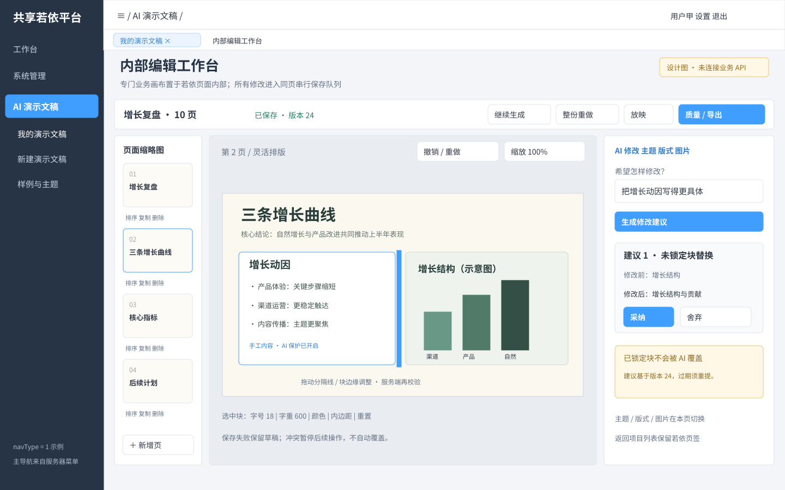
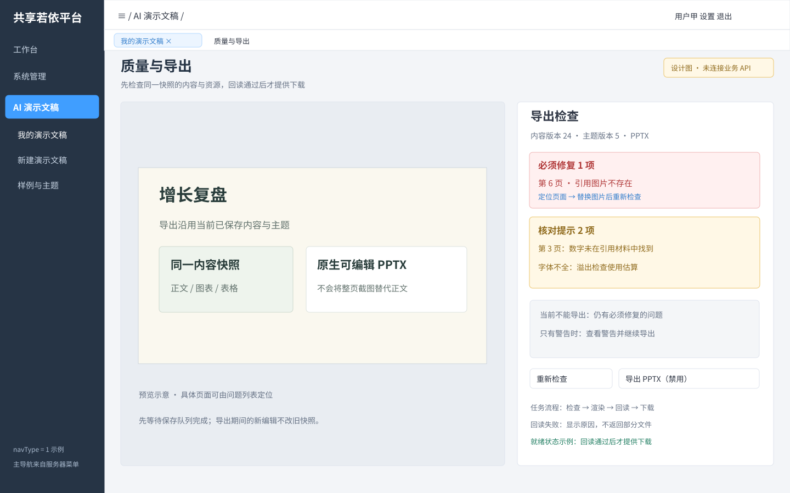
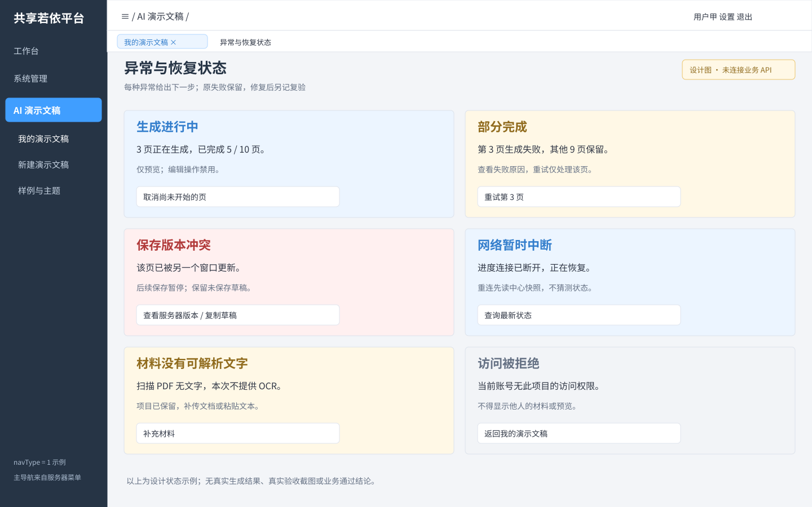

AI 演示文稿 · 完整迁移界面设计

1. 我的演示文稿 — 1440×900 设计示意，当前展示 navType=1；实现须兼容另外两种平台导航。单独打开图稿
2. 新建与材料 — 1440×900 设计示意，当前展示 navType=1；实现须兼容另外两种平台导航。单独打开图稿
3. 提纲确认 — 1440×900 设计示意，当前展示 navType=1；实现须兼容另外两种平台导航。单独打开图稿
4. 内部编辑工作台 — 1440×900 设计示意，当前展示 navType=1；实现须兼容另外两种平台导航。单独打开图稿
5. 质量与导出 — 1440×900 设计示意，当前展示 navType=1；实现须兼容另外两种平台导航。单独打开图稿
6. 异常与恢复状态 — 1440×900 设计示意，当前展示 navType=1；实现须兼容另外两种平台导航。单独打开图稿